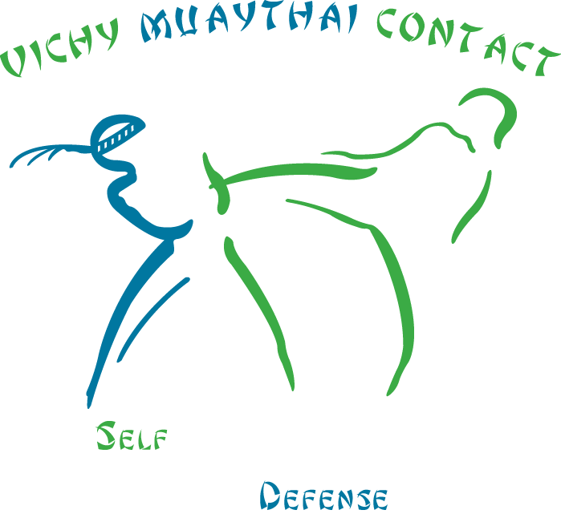

Le Muaythaï
La boxe thaïlandaise, ou muaythaï, est un art martial classé en Occident parmi les boxes pieds-poings.
Le muaythaï trouve son origine dans des pratiques martiales ancestrales, notamment dans le muay boran et le krabi krabong. Elle est la plus populaire des boxes du Sud-Est asiatique et doit sa popularité au fait qu’elle est une discipline nationale professionnalisée. Comme ses cousines elle a la réputation d’être une pratique de combat particulièrement efficace.

Le Club
Toujours dans un esprit familial et le respect de chacun, Le Vichy Muaythaï Contact assure l’apprentissage et le développement de ses 2 disciplines par des entraînements quotidiens. Pendant ceux-ci aucun transfert de puissance n’est toléré afin de préserver l’intégrité physique de chacun des pratiquants, sauf bien-sûr pour les compétiteurs combattants.

La S.M.A
La SMA a été conçu en 1995 par Fabrice Halopeau, qui a passé 34 ans en Gendarmerie, notamment au service du GIGN, de l'unité de protection du Président de la République et aussi Groupe d’Intervention de Guyane. Il a réalisé un programme technique basé sur son expérience du terrain et des interventions à hauts risques. Toutes les techniques ont été expérimentées sur le terrain dans des conditions réelles. Il est également membre de l’Association Internationale de Tactique de Police pour laquelle il réalise de nombreuses formations.